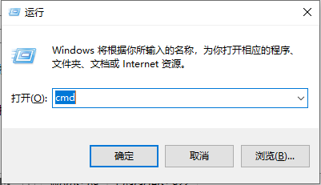

程序一般会有两种状态：
在源代码文件和可执行文件中间可能有多种不同类型的过渡文件。
C++程序的源代码文件是“文件名.cpp”。 文件名最好是有意义的英文名，最差是不用中文起名，如“hello.cpp”是有意义的C++源代码文件名。 “.cpp”是文件的扩展名，用来标记文件的类型或意义，又如“文件名.txt”是简单的文本文件，“.exe”是windows下的可执行文件等等，下面简单列一些。
源代码文件是人写的给人看的，大部分是由英文单词和字母写成的，例如hello.cpp：
#include <iostream>
using namespace std;
int main(){
cout << "Hello World!" << endl;
return 0;
}
在Dev cpp编程环境中按F9键，Dev帮你调用g++编译器将hello.cpp编译成hello.exe，现在这个hello.exe安静地保存在与hello.cpp相同的位置，计算并不执行它。
如果你按F11键，Dev帮你执行hello.exe并看到结果。

hello.exe是通过g++将hello.cpp翻译成的计算机能读懂的程序，大概是下面的样子：

几个windows快捷组合键
按住win键同时按r键出现如下对话框，在输入框中输入cmd指令，

打开命令窗口。

其中C:\User\Dawei是你在磁盘中的当前位置，这个位置你一定要随时了解，否则你就丢了。
命令窗口是人和计算机说话、聊天、下达命令的交互界面，常用的命令可能是
盘符： 改变当前磁盘，例如d:切换到D盘去dir 当前目录内容列表cd 改变当前目录，例如cd code由当前目录进入到code目录可执行文件名 执行一个程序文件，例如hello.exe现在，我知道我的hello.cpp和hello.exe保存在如下位置

可是在命令窗口中如何找到hello.exe并执行他呢？ 可用如下命令进行操作：
查看一下当前目录下有什么内容
F:\a.steam\dreamx\handout\01\codes>dir
驱动器 F 中的卷是 Mine
卷的序列号是 5439-F4B4
F:\a.steam\dreamx\handout\01\codes 的目录
2019/10/18 12:21 <DIR> .
2019/10/18 12:21 <DIR> ..
2019/10/18 10:50 114 hello.cpp
2019/10/18 11:01 1,921,118 hello.exe
2 个文件 1,921,232 字节
2 个目录 57,788,055,552 可用字节
我们看到了hello.cpp和hello.exe的详细信息。那，如何执行hello.exe这个可执行程序呢？ 输入如下命令：
F:\a.steam\dreamx\handout\01\codes>hello.exe
得到如下系统的回应
Hello World!
F:\a.steam\dreamx\handout\01\codes>
正是我们所编程序的输出结果。
像dir这种命令是找不到程序文件的是内部命令，由操作系统自带。而像hello.exe这种可执行程序，也叫命令，是系统以外的命令，叫外部命令。这种外部命令，必须有可执行文件。
如果一个命令只完成一个功能不仅单一，而且浪费。命令的通用格式是可以带参数的，在Windows下内部命令可用/?参数查看更多参数，例如，查看dir的参数，可用如下命令：
dir /?
系统会显示dir命令的详细用法
显示目录中的文件和子目录列表。
DIR [drive:][path][filename] [/A[[:]attributes]] [/B] [/C] [/D] [/L] [/N]
[/O[[:]sortorder]] [/P] [/Q] [/R] [/S] [/T[[:]timefield]] [/W] [/X] [/4]
[drive:][path][filename]
指定要列出的驱动器、目录和/或文件。
/A 显示具有指定属性的文件。
属性 D 目录 R 只读文件
H 隐藏文件 A 准备存档的文件
S 系统文件 I 无内容索引文件
L 重新分析点 O 脱机文件
- 表示“否”的前缀
/B 使用空格式(没有标题信息或摘要)。
/C 在文件大小中显示千位数分隔符。这是默认值。用 /-C 来
禁用分隔符显示。
/D 跟宽式相同，但文件是按栏分类列出的。
/L 用小写。
/N 新的长列表格式，其中文件名在最右边。
/O 用分类顺序列出文件。
排列顺序 N 按名称(字母顺序) S 按大小(从小到大)
E 按扩展名(字母顺序) D 按日期/时间(从先到后)
G 组目录优先 - 反转顺序的前缀
/P 在每个信息屏幕后暂停。
/Q 显示文件所有者。
/R 显示文件的备用数据流。
/S 显示指定目录和所有子目录中的文件。
/T 控制显示或用来分类的时间字符域
时间段 C 创建时间
A 上次访问时间
W 上次写入的时间
/W 用宽列表格式。
/X 显示为非 8dot3 文件名产生的短名称。格式是 /N 的格式，
短名称插在长名称前面。如果没有短名称，在其位置则
显示空白。
/4 以四位数字显示年份
可以在 DIRCMD 环境变量中预先设定开关。通过添加前缀 - (破折号)
来替代预先设定的开关。例如，/-W。
我现在要问的问题是，怎样让你的hello.exe也可以使用参数让程序发生变化。